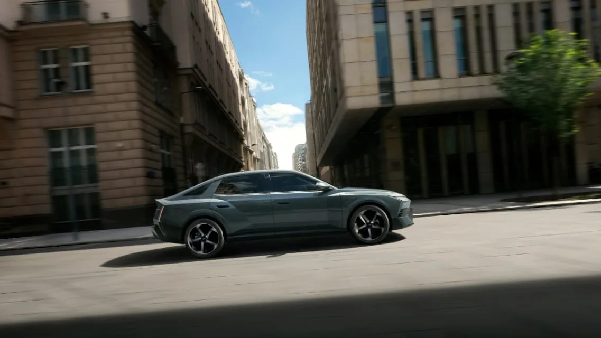
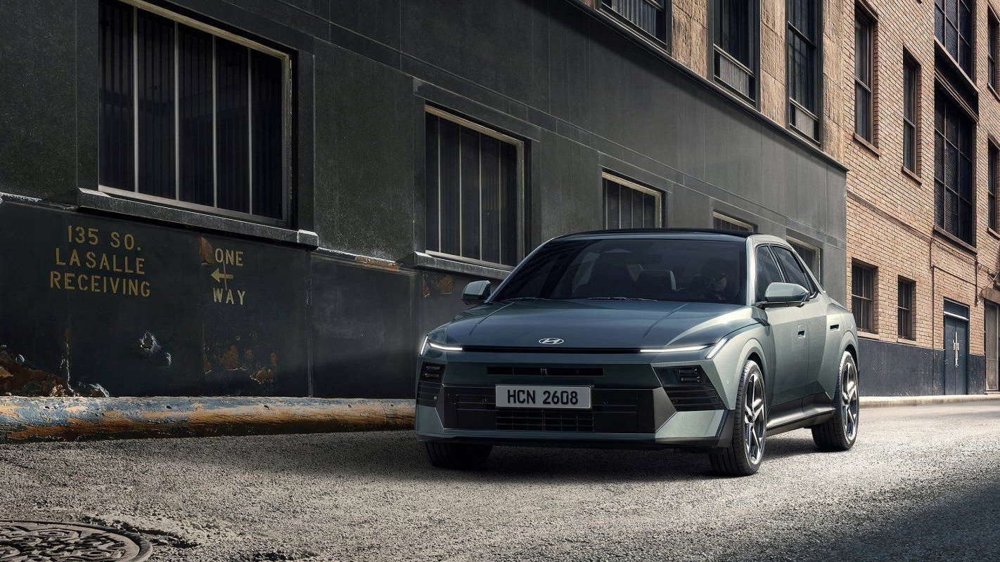
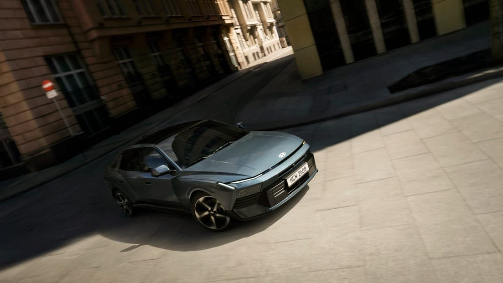

Hyundai · 全球首發 · 韓國2026-11-19
第八代 Hyundai Elantra 洛杉磯車展全球首發：Art of Steel 三箱式房車
Hyundai Motor Unveils The all-new ELANTRA, Bringing Dynamic Confidence to the Compact Sedan
Hyundai 在洛杉磯車展 AutoMobility LA 全球首發第八代 Elantra（韓國名 Avante，已於 2026 年 8 月在韓國上市），首度把 Art of Steel 設計語言用在緊湊房車。車長 +85 mm、車寬與軸距各 +30 mm，後座腿部空間 993 mm；提供 1.6L 油電與 2.0L 汽油，北美 2027 年初上市。
設計解析 Design Notes
- 比例寬厚肌肉感的葉子板、長引擎蓋與三箱式比例；設計中心負責人 SangYup Lee 說「房車的比例誠實、直覺又實用」。
- H-Edge 燈號日行燈是一道水平光條，強調更寬更低的站姿；直立雕塑感的尾燈兼顧導流，前後用同一套 H-Edge 語彙。
- 細節細頸後視鏡與上掀式隱藏門把，讓側面更乾淨。
- 座艙「Curve of Upholstery」以家具為靈感的包覆與對稱布局，12.9 吋 Pleos Connect 中控，常用功能保留實體按鍵。